Diseño del Gestor Perhusa: trazabilidad del café, del acopio a la exportaciónDesigning Gestor Perhusa: coffee traceability, from collection to export
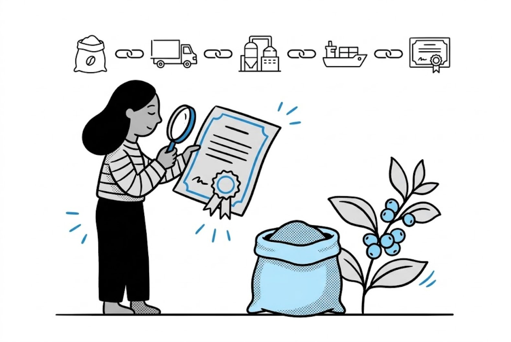
IntroducciónIntroduction
Perhusa, exportadora de café peruano, necesitaba demostrar la trazabilidad de su café a certificadores y clientes internacionales, sin exponer datos sensibles como el nombre de sus distribuidores.Perhusa, a Peruvian coffee exporter, needed to prove the traceability of its coffee to international certifiers and clients without exposing sensitive data such as the names of its distributors.
Para lograrlo, se contactaron con Identi, empresa especializada en tecnología blockchain, con el objetivo de desarrollar una solución que garantizara la seguridad, trazabilidad e integridad de la información en cada etapa del proceso.To do this, they reached out to Identi, a company specialized in blockchain technology, to build a solution that would guarantee the security, traceability and integrity of the information at every stage of the process.
Mi rol en el proyectoMy role in the project
Desde Identi, diseñé el Gestor Perhusa de punta a punta: requerimientos con stakeholders, discovery, lógica de producto, wireframes, testing con usuarios y handoff. Mi foco fue traducir una lógica de negocio compleja (trazabilidad blockchain por etapas) en una herramienta clara para el equipo interno.At Identi, I designed Gestor Perhusa end to end: requirements with stakeholders, discovery, product logic, wireframes, user testing and handoff. My focus was turning complex business logic (stage-based blockchain traceability) into a clear tool for the internal team.
Objetivo de Gestor PerhusaGestor Perhusa’s goal
El objetivo del Gestor Perhusa es garantizar la trazabilidad de la información en todos los procesos que maneja la empresa, almacenarla en el gestor y generar dos tipos de certificados, uno comercial y otro para sus certificadores internacionales, encargados de verificar el cumplimiento adecuado de los procesos a nivel global.Gestor Perhusa’s goal is to guarantee the traceability of information across all of the company’s processes, store it in the manager and generate two types of certificates: one commercial, and one for its international certifiers, who verify that processes are properly followed worldwide.
Estos certificados deben contar con tecnología blockchain para proteger la información sensible y además permitir que Perhusa controle qué datos desea mostrar.These certificates must use blockchain technology to protect sensitive information and let Perhusa control which data it wants to show.
UX RoadmapUX Roadmap
Con esto claro, el proceso involucró las siguientes etapas:With this clear, the process went through the following stages:
Descubrimiento y DefiniciónDiscovery & Definition
- Definición de requerimientosRequirements definition
- Proto personas & journey mapsProto personas & journey maps
Ideación & ConceptualizaciónIdeation & Concept
- Definición de lógica de productoProduct logic definition
- WireframesWireframes
Etapa de DiseñoDesign stage
- Testing de usabilidadUsability testing
- Prototipo de alta fidelidadHigh-fidelity prototype
Desarrollo & ValidaciónDevelopment & Validation
- HandoffHandoff
Definición de requerimientosRequirements definition
Para definir requerimientos partimos con reuniones con stakeholders de Perhusa para identificar todas las necesidades de sus certificadores internacionales y clientes, además de las funcionalidades clave a integrar en el gestor.To define requirements, we started with meetings with Perhusa’s stakeholders to identify all the needs of their international certifiers and clients, as well as the key features to build into the manager.
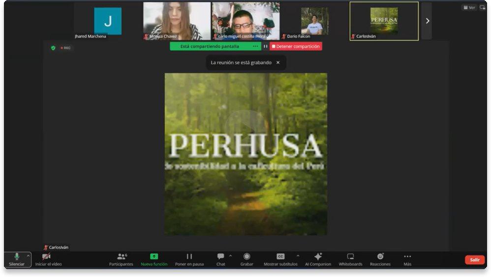
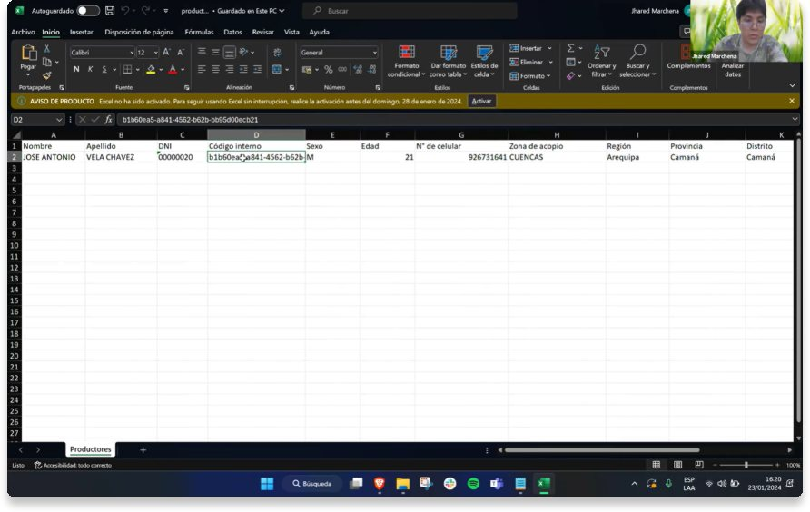
NecesidadesNeeds
A partir de las reuniones con stakeholders, identificamos las siguientes necesidades principales:From the stakeholder meetings, we identified these main needs:
- Personalizar la información que desean compartir con certificadores internacionales y clientes.Customize the information they want to share with international certifiers and clients.
- Subir datos sobre las distintas etapas del café, desde su origen hasta la exportación.Upload data about each stage of the coffee, from origin to export.
- Registrar información de sus productores de café.Register information about their coffee producers.
- Registrar datos sobre las parcelas (campos) de los productores.Register data about the producers’ plots (fields).
- Generar certificados con tecnología blockchain, con un diseño atractivo y que muestre la información seleccionada.Generate blockchain certificates with an attractive design that shows the selected information.
DiscoveryDiscovery
El proceso de descubrimiento incluyó dos etapas fundamentales para mapear necesidades y posibles soluciones, tanto desde la perspectiva del usuario como del producto.Discovery included two key stages to map needs and possible solutions, from both the user’s and the product’s perspective.
Proto usuarioProto user
Nos permitió empatizar con los usuarios y entender mejor sus necesidades.It helped us empathize with users and better understand their needs.
Journey mapJourney map
Permitió mapear posibles problemas y generar soluciones iniciales en conjunto como equipo.It let us map potential problems and come up with first solutions together as a team.
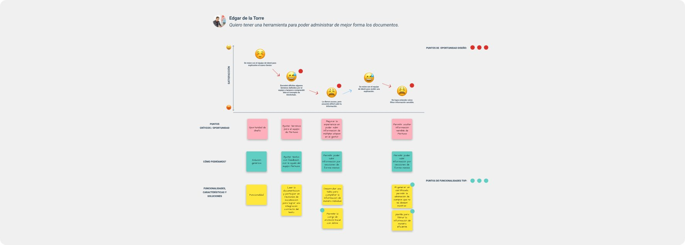
Definición de lógica de productoProduct logic definition
Tras recopilar información en reuniones y comprender las necesidades de Perhusa, utilizamos la documentación proporcionada para definir el método de carga de datos, optando por una carga masiva por etapas. A partir de esto, identificamos las distintas fases en las que se registra información, permitiendo estructurar el proceso de una orden de venta, desde la entrada al centro de acopio hasta el despacho y embarque.After gathering information in meetings and understanding Perhusa’s needs, we used the documentation they shared to define the data upload method, choosing stage-based bulk upload. From there, we identified the phases where information is recorded, which let us structure a sales order from arrival at the collection center to dispatch and shipping.
Gracias a este enfoque, logramos dividir el proceso en cinco etapas:With this approach, we split the process into five stages:
- Entrada de centro de acopioCollection center intake
- Salida de centro de acopioCollection center output
- Recepción en plantaPlant reception
- ProcesamientoProcessing
- Despacho y embarque de productoProduct dispatch and shipping
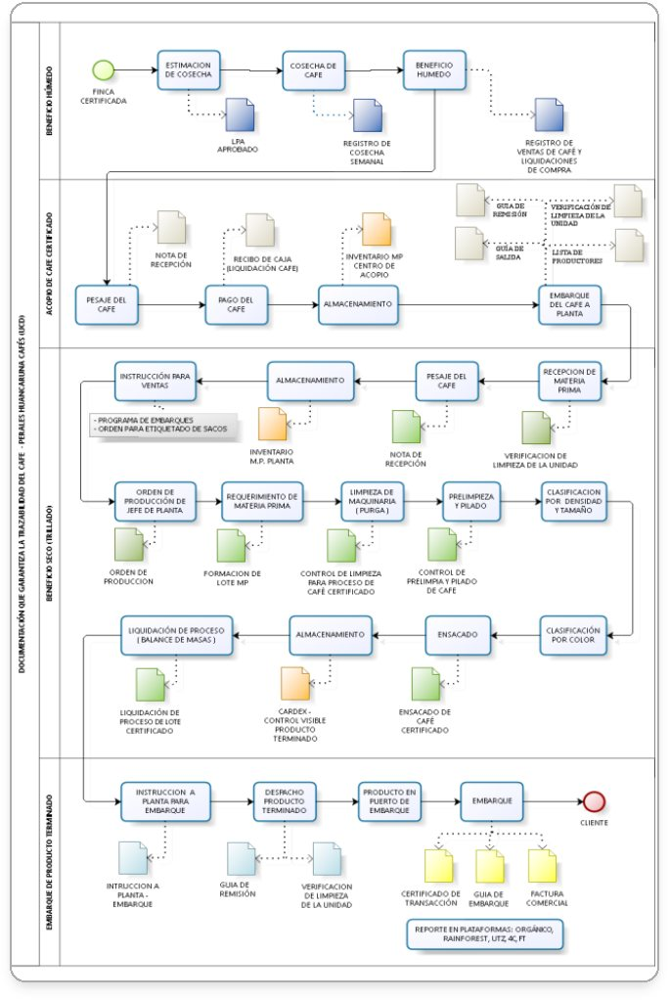
Flujograma de trazabilidad del caféCoffee traceability flowchart
Documentación de PerhusaPerhusa documentation
WireframesWireframes
Las primeras pantallas tenían como objetivo validar conceptos con los clientes y asegurar que la lógica y los datos incorporados fueran coherentes y correctos. Las reuniones fueron muy fructíferas durante este proceso, ya que nos dieron un amplio feedback que nos permitió corregir errores y mejorar continuamente.The first screens aimed to validate concepts with the client and make sure the logic and data were coherent and correct. The meetings were very productive, giving us plenty of feedback to fix mistakes and keep improving.
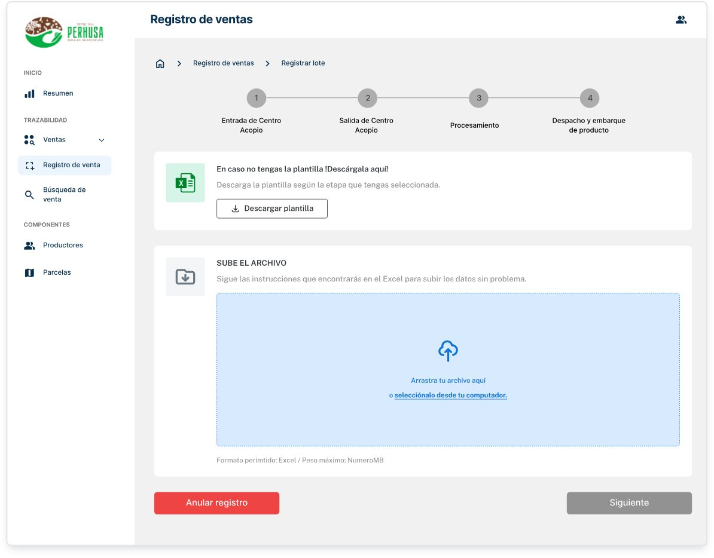
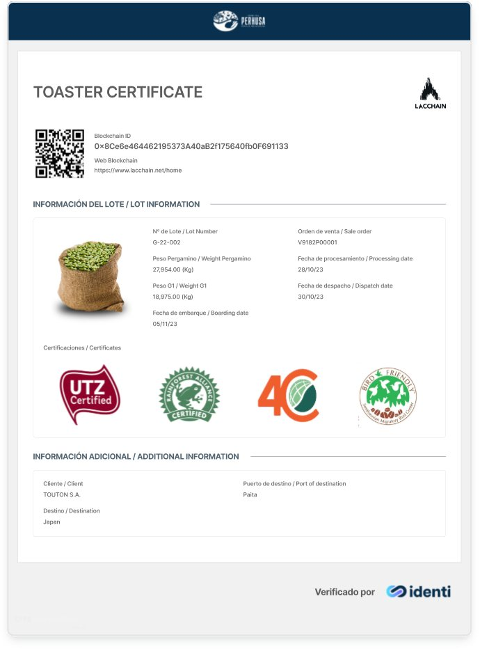
Testing de usabilidadUsability testing
Hicimos un test moderado por Meet con 5 trabajadores de Perhusa, usando el prototipo en Maze. Durante este proceso, se formularon preguntas sobre los flujos en cada sección del gestor.We ran a moderated test over Meet with 5 Perhusa employees using the prototype in Maze, asking questions about the flows in each section of the manager.
ResultadosResults
Tras analizar las métricas, identificamos los puntos más relevantes, lo que nos permitió determinar áreas de mejora y verificar si cumplimos con los objetivos esperados.After analyzing the metrics, we identified the most relevant points, which helped us define areas for improvement and check whether we met the expected goals.
Testeamos a 5 trabajadores de Perhusa, quienes serán los encargados de utilizar el gestor.We tested with 5 Perhusa employees, who will be the ones using the manager.
60% de los usuarios entendieron la sección de búsqueda de ventas.60% of users understood the sales search section.
80% de los usuarios entendieron cómo subir información de forma masiva.80% of users understood how to upload information in bulk.
40% de los usuarios comprendieron cómo completar la información en la sección “Parcelas”.40% of users understood how to fill in the “Plots” section.
100% de los usuarios comprendieron cómo generar un certificado y configurar la plantilla para mostrar la información deseada.100% of users understood how to generate a certificate and set up the template to show the information they wanted.
El hallazgo más crítico fue el 40% en la sección Parcelas. Ese resultado derivó directamente en una iteración: incorporamos el lenguaje y términos que el equipo de Perhusa usa en su operación diaria, y simplificamos la estructura de entrada de datos para reducir la fricción en esa tarea específica.The most critical finding was the 40% in the Plots section. That result led directly to an iteration: we brought in the language and terms Perhusa’s team uses in daily operations, and simplified the data entry structure to reduce friction in that specific task.
Prototipo de alta fidelidadHigh-fidelity prototype
Tras los resultados del testing, iteramos el prototipo incorporando las recomendaciones de los trabajadores de Perhusa, incluyendo el lenguaje y términos que utilizan en su día a día. Esto nos permitió presentar un prototipo de alta fidelidad alineado con sus necesidades y contexto.After the testing results, we iterated on the prototype with the recommendations from Perhusa’s employees, including the language and terms they use every day. This let us present a high-fidelity prototype aligned with their needs and context.
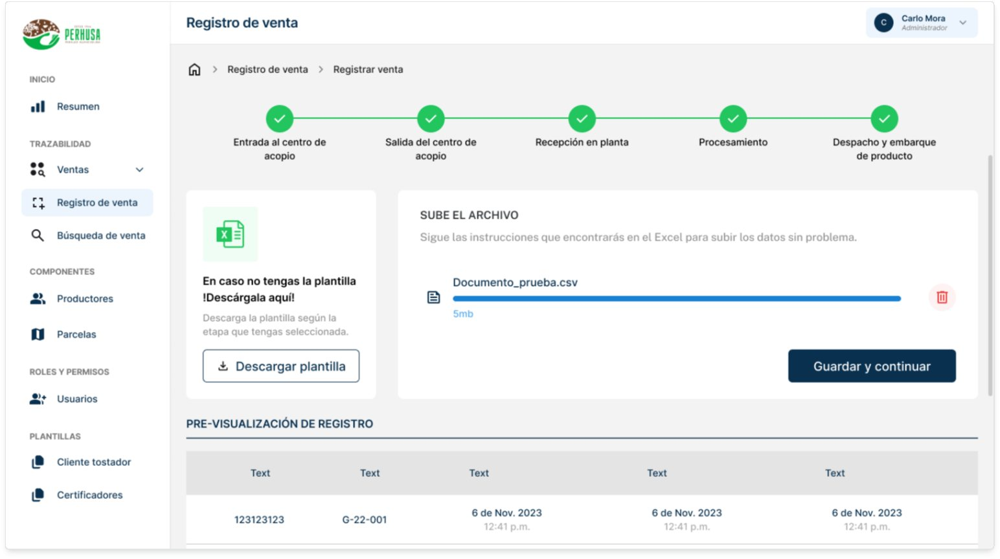
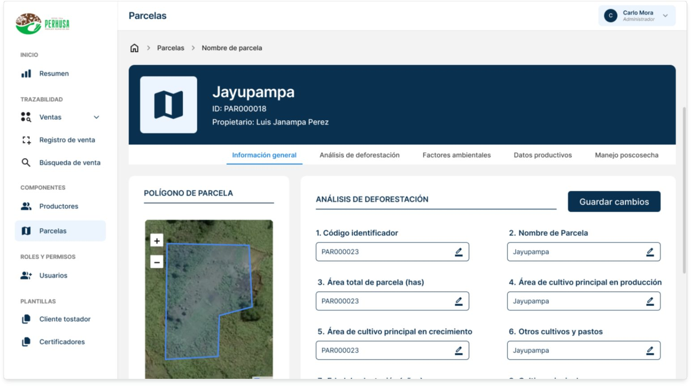
Handoff: más que una entrega de prototipoHandoff: more than delivering a prototype
Cuando el prototipo de alta fidelidad estuvo listo, empezó el handoff. Para mí esta etapa no es el cierre del diseño, es una transición que hay que acompañar hasta que el producto esté implementado.Once the high-fidelity prototype was ready, handoff began. For me, this stage isn’t the end of design. It’s a transition that needs support until the product is built.
Hicimos sesiones de socialización con el equipo de desarrollo para que pudieran estimar tiempos de implementación y entender la lógica del producto antes de escribir código.We held walkthrough sessions with the development team so they could estimate implementation time and understand the product logic before writing code.
Cómo lo trabajé:How I approached it:
- Prototipo con flujo visual: para que el equipo entendiera el producto completo, no pantallas sueltas.Prototype with a visual flow: so the team understood the whole product, not isolated screens.
- Especificaciones técnicas: tamaños, espaciados, interacciones y componentes reutilizables documentados.Technical specs: sizes, spacing, interactions and reusable components documented.
- Reuniones de alineación: para resolver dudas, explicar decisiones de diseño y recibir feedback técnico.Alignment meetings: to answer questions, explain design decisions and get technical feedback.
- Seguimiento y QA: revisamos la implementación, detectamos inconsistencias y las ajustamos antes de salir.Follow-up and QA: we reviewed the build, caught inconsistencies and fixed them before launch.
ConclusiónConclusion
El proyecto abarcó desde la investigación inicial hasta el acompañamiento en desarrollo, lo que permitió entregar un gestor funcional alineado con la lógica real del negocio.The project covered everything from initial research to supporting development, which made it possible to deliver a working manager aligned with the real business logic.
El mayor aprendizaje fue que en productos con lógica compleja, como la trazabilidad por etapas, el diseño no puede separarse del entendimiento profundo del proceso. Cada pantalla dependía de decisiones de negocio que había que comprender antes de proponer.The biggest lesson was that in products with complex logic, like stage-based traceability, design can’t be separated from a deep understanding of the process. Every screen depended on business decisions that had to be understood before proposing anything.
El proceso de handoff también reforzó algo importante: entregar un prototipo no es el final. Es el inicio de una nueva etapa que requiere acompañamiento, sesiones de alineación y seguimiento en implementación para que la experiencia diseñada llegue intacta al producto final.Handoff also reinforced something important: delivering a prototype isn’t the end. It’s the start of a new stage that needs support, alignment sessions and implementation follow-up so the designed experience reaches the final product intact.
Agradezco al equipo de desarrollo y a la Product Manager del proyecto por su liderazgo y apoyo en la comprensión de cada aspecto clave de la lógica del producto.Thanks to the development team and the project’s Product Manager for their leadership and support in understanding every key part of the product logic.